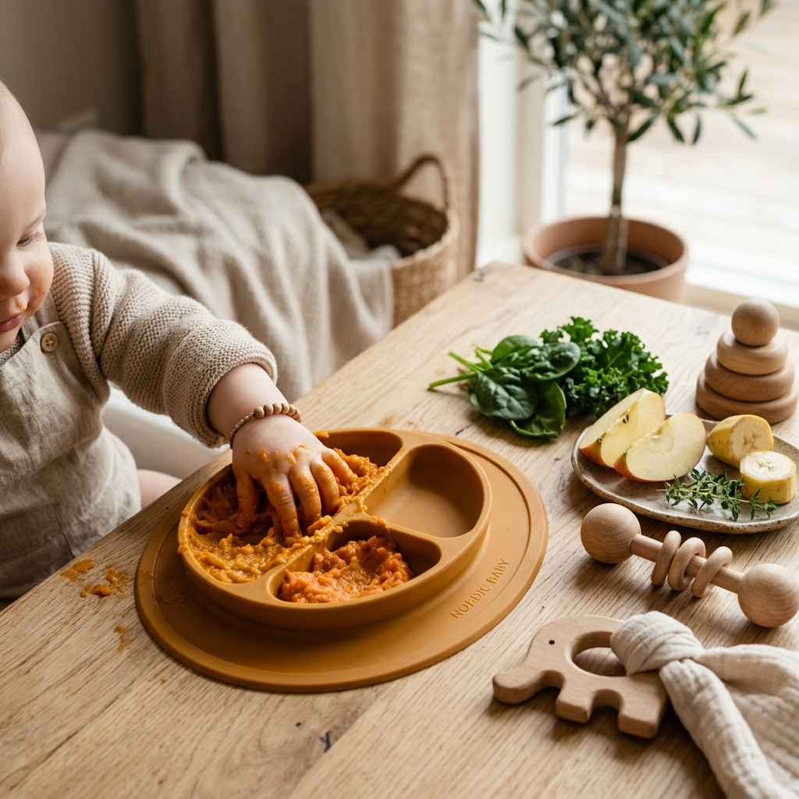

When our children are unwell, a warm, gentle bowl of comfort food is the best medicine. Bal Aahar helps you find traditional, age-appropriate Indian recipes tailored to your child's symptoms—bringing comfort, nutrition, and hydration back into their recovery days.

Select your child's age group and their primary symptom to reveal custom healing recipes.
The recipes, home remedies, and advice on Bal Aahar are intended for comforting and supporting recovering children. They are not a substitute for professional medical care, diagnosis, or advice. Always consult your pediatrician immediately if your child has a high or persistent fever, difficulty breathing, refuses all fluids, shows signs of severe dehydration, or exhibits any severe symptoms. Under 12 months, strictly avoid honey and salt.